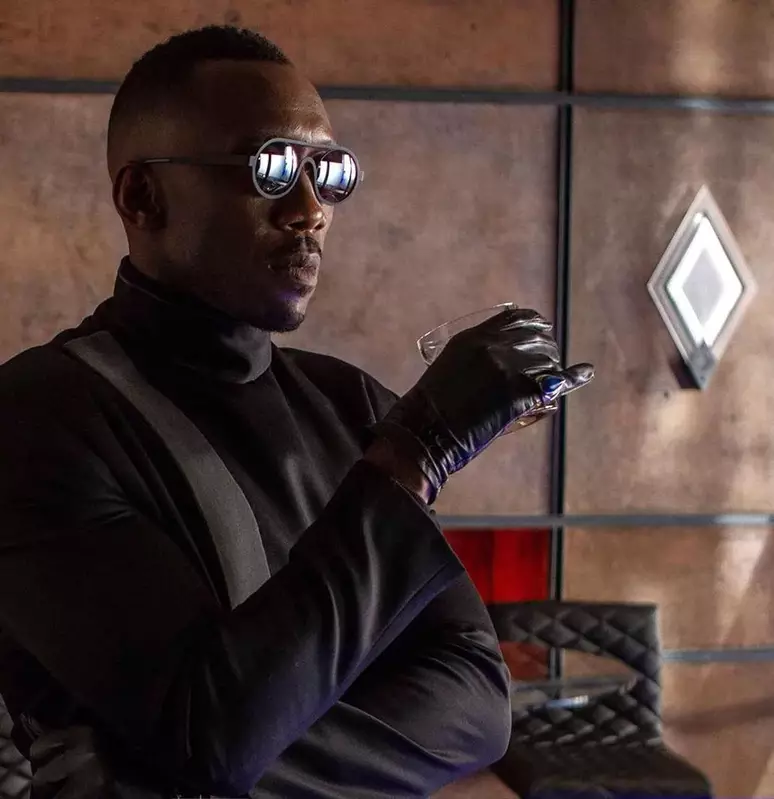

Suits L.A ganha a sua primeira imagem com o astro Green Arrow Stephen Amell
Postado 23 de julho de 2024

Depois de 8 anos na CW, o ator Stephen Amell é o novo protagonista de Suits L.A
A série revelou sua primeira imagem, do ator sentado na mesa tomando uma decisão.
Apesar do seu ultimo trabalhos ter sido em 2024, ele foi escolhido
para protagonizar um advogado na trama. A série Suits ganhou audiência na Netflix
e foi encerrada em 2021, agora em uma nova fase, sendo que o perigo é em
outra cidade. A série não tem data prevista, mas tudo indica que vai estreiar em 2025.
Blade um dos filmes mais esperado da Marvel terá classificação para maiores
Postado 23 de julho de 2024

Blade, é um dos filmes mais aguardados para os fãs da Marvel, Devido as suas complicações. Em um evento que promovia DeadPool e Wolverine o presidente da Marvel Kevin Feige, disse que o filme Blade terá faixa etária para maiores pois o filme terá muitos detalhes +18, e não será produzido para crianças. O Filme Blade teve varias complicações com as saídas de diretores. O filme teve sua apresentação em 2019 e ate agora nada foi gravado.
DC Comics anuncia a minissérie Batman e Robin: Ano Um
Postado 23 de julho de 2024

Batman é uma das maiores franquias da Warner, e um produto poderoso para marca DC Comics. Depois de varias series envolvendo o Bruce Wayne, a DC anuncia que Batman e Robin: Ano um Terá sua própria míni serie. A historia será baseada na fase em que o Bruce adota o Dick Gayson, e tenta lidar com isso sendo o Batman, como já sabemos do futuro do Robin a história explicara como isso aconteceu antes de ele ser o Robin segundo o roterista Mark Waid. “No fundo, esta não é uma história de Batman & Robin,” explica Mark Waid. “É uma história de Bruce/Dick. contece apenas um mês ou dois depois que Bruce adotou Dick. E está caindo a ficha para Bruce de que ele não tem ideia de como ser pai de uma criança dessa idade. Ele não tem um modelo a seguir. Seu próprio pai estava morto há muito tempo quando ele tinha a idade de Dick. Nada do que ele já fez o preparou para isso. E Alfred, por mais sábio que seja, também não tem muita experiência aqui.” Samnee falou sobre porque Bruce e Dick se complementam. “Dick é tudo o que Bruce não é—impulsivo, imprudente. Mas ele também é preciso. Ele consegue aterrissar com perfeição. Ele segue ordens quando fazem sentido para ele. Mas ele está ansioso para improvisar, testando seu papel dentro da Dupla Dinâmica.” Samnee acrescentou que as páginas de preview “mostram como eles agirão e reagirão enquanto patrulham juntos a cidade de Gotham.” Batman and Robin: Year One #1 chega às lojas de quadrinhos dos EUA em 16 de outubro de 2024.
Postagens Antigas
Novo teaser de Stranger Things e Raphael Logan "Impuros"
Leia Mais